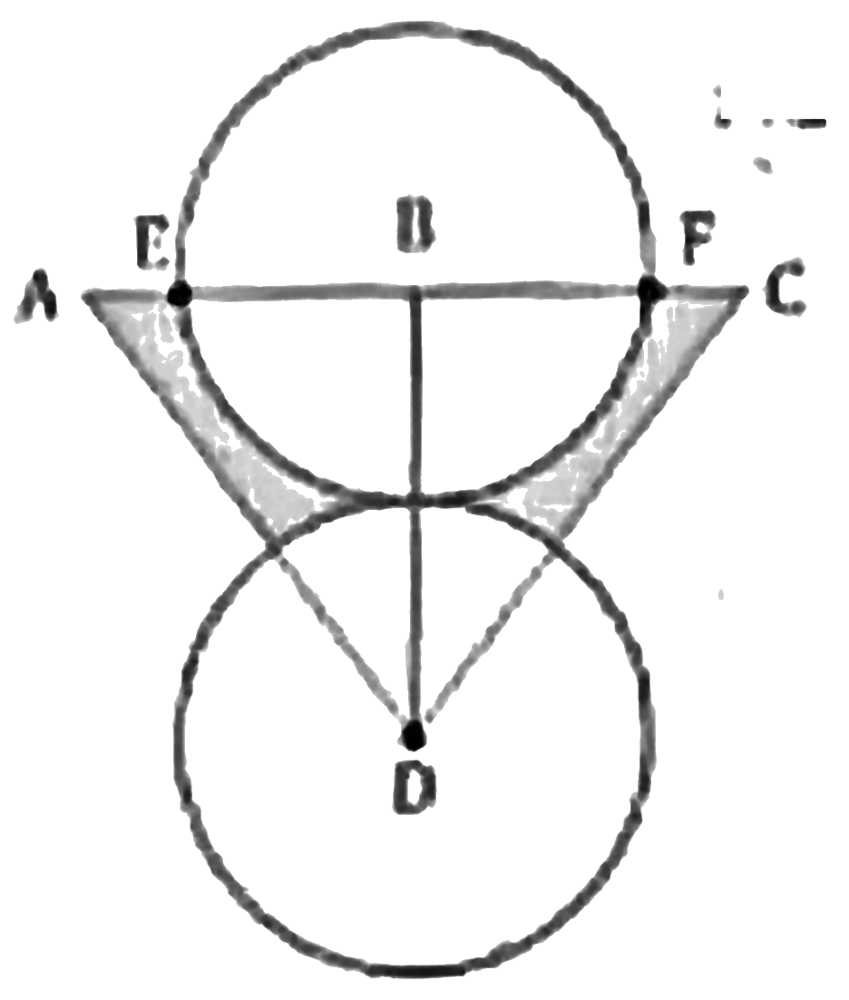

נתון: x ≠ y , A = |x| − |y||x − y|
מה מהבאים נכון בהכרח?
(x + 20) אחוזים מ־80 גדול פי 4 מ־8% מ־(y + 50).
xy = ?
172,190,714 מתחלק ב־7 עם שארית 3. איזה מהבאים מתחלק ב־7 עם שארית 1?
במושב גרות 100 משפחות. ל־40 מהן יש כלב ול־30 מהן יש חתול. ידוע כי לפחות למשפחה אחת יש גם כלב וגם חתול.
מה מהבאים נכון בהכרח?
מעוניינים לרוקן מים ממיכל שצורתו קובייה המלא במים, באמצעות כוס בצורת גליל. גובה ורדיוס בסיס הכוס שווים ל־2 ס"מ, ואורך מקצוע המיכל הוא 6 ס"מ.
כמה פעמים, לכל הפחות, עלינו לרוקן מים באמצעות הכוס עד שהמיכל יהיה ריק לחלוטין?
נתון: x ו־y מספרים ראשוניים דו־ספרתיים, y < x. x − y = z
מה מהבאים נכון בהכרח לגבי ערכו של הביטוי zx−y4 ?⚠

בסרטוט שלפניכם משולש שווה צלעות ACD ושני מעגלים חופפים, שמרכזם ב־B ו־D ורדיוסם r.
על פי נתונים אלו ונתוני הסרטוט, מה גודלו של השטח האפור?
a, b ו־c הם מספרים טבעיים ושונים זה מזה. נתון: 1 < a, b, c , x = a³ · b² · c
איזה מהמספרים הבאים יכול להיות ערכו של x?
x הוא מספר תלת־ספרתי זוגי המתחלק ב־3. מה מהבאים נכון בהכרח?
בחנות בגדים מחירה של כל חולצה הוא 140 שקלים, ובימים בהם ישנו מבצע מחירה יורד ל־119 שקלים. אם ביום כלשהו ⅔ מהחולצות היו במבצע, מה המחיר הממוצע לחולצה (בשקלים) באותו היום?